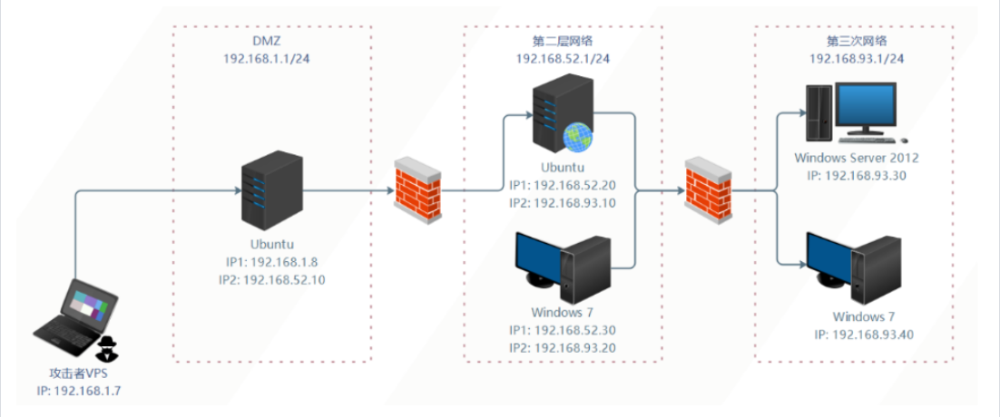
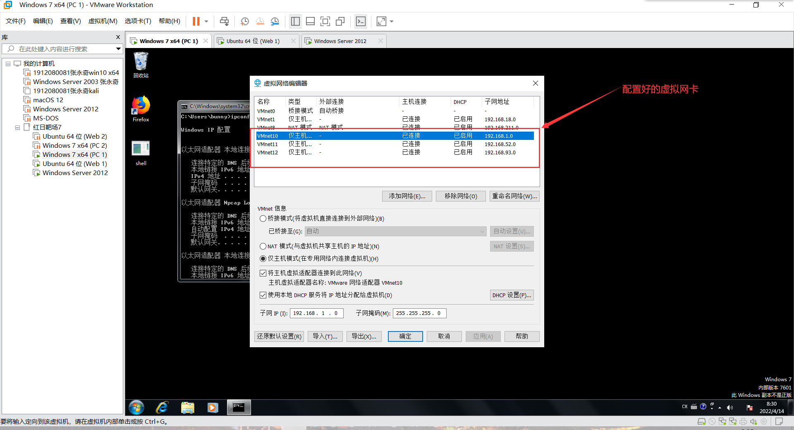
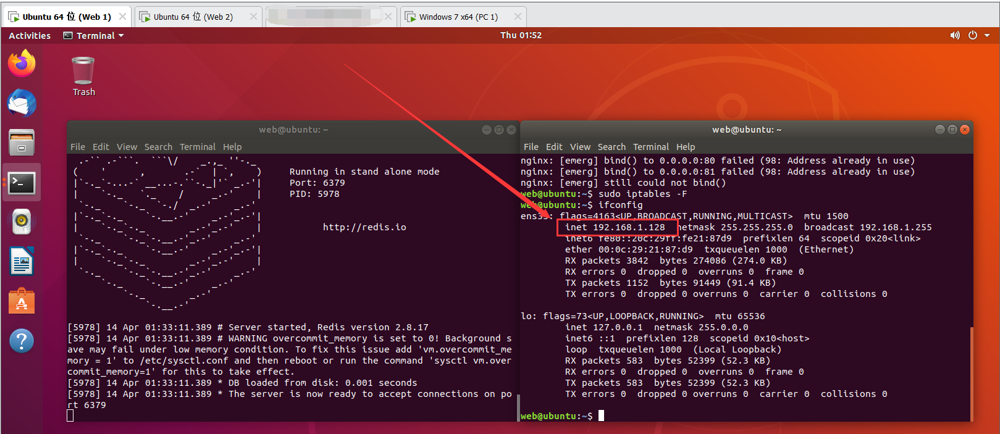
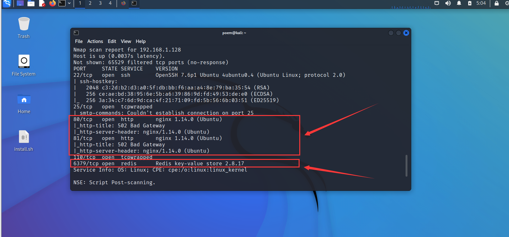

红日靶场七
红日靶场七#
前言#
首先打这个靶场是为了了解一下最近两三年的危害比较大的漏洞，然后还可以同时学习一下这个近似于现实环境的靶场是如何攻入的。我觉得这会对我的渗透能力的提升帮助很大，而且我也觉是时候培养一下内网的渗透思路了，所以打个靶场试试，并且把渗透的主要思路记录如下。主要也是照着网上的各位师傅的文章给弄的（毕竟有的地方我也搞不太明白），照着网上做的地方我会写出引用的内容的出处，我能力与文笔都比较差，如果又哪里不对或者不当请不吝指出，我将不胜感激。
一、靶场配置#
1、靶场环境示意图#
下面是靶场环境示意图：

首先呢，因为靶场环境实在是太大了，我这里难以带动五台占用2G(总共10G)的虚拟机同时运行，所以我先对上图中的第一层和第二层网络进行渗透。
2、靶场网卡配置#
上面的环境示意图应该都不难理解，那我就直接写网卡的配置了。根据上图所示的ip地址的配置，这里需要有三张网卡，分别是：
| 网卡 | ip地址 | 网关 |
|---|---|---|
| 第一张网卡 | 192.168.1.0 | 255.255.255.0 |
| 第二张网卡 | 192.168.520 | 255.255.255.0 |
| 第三张网卡 | 192.168.93.0 | 255.255.255.0 |

然后DMZ分前两张网卡、第二层网络分后两张网卡、第三层分最后一张网卡。那么，网卡的配置基本上到这里就结束了。
3、靶机用户名和密码1#
域用户账户和密码如下：
Administrator：Whoami2021
whoami：Whoami2021
bunny：Bunny2021
moretz：Moretz2021
Ubuntu 1：
web：web2021
Ubuntu 2：
ubuntu：ubuntu
通达OA账户：
admin：admin657260（我用administrator:Whoami2021启动的）
4、靶机服务配置#
靶场中各个主机都运行着相应的服务并且没有自启功能，如果我们关闭了靶机，再次启动时还需要在相应的主机上启动靶机服务!
DMZ区的 Ubuntu 需要启动Nginx和Redis服务：
sudo /usr/sbin/nginx -c /etc/nginx/nginx.conf sudo iptables -F redis-server /etc/redis.conf第二层网络的 Ubuntu需要启动Docker容器：
sudo docker start 8e172820ac78第三层网络的 Windows 7（PC 1）需要启动通达OA：
C:\MYOA\bin\AutoConfig.exe经过测试需要开启防火墙，不然扫不到
二、入侵DMZ网络#
1、什么是DMZ网络#
首先，DMZ网络是什么呢？百度百科的解释如下：
DMZ，是英文“demilitarized zone”的缩写，中文名称为“隔离区”，也称“非军事化区”。它是为了解决安装防火墙后外部网络的访问用户不能访问内部网络服务器的问题，而设立的一个非安全系统与安全系统之间的缓冲区。该缓冲区位于企业内部网络和外部网络之间的小网络区域内。在这个小网络区域内可以放置一些必须公开的服务器设施，如企业Web服务器、FTP服务器和论坛等。另一方面，通过这样一个DMZ区域，更加有效地保护了内部网络。因为这种网络部署，比起一般的防火墙方案，对来自外网的攻击者来说又多了一道关卡。2
简单来说应该就是一个外网与内网之间的跳板，我们在渗透测试的过程之中也可以踩着这个跳板进入目标网络的内网。
2、信息收集#
首先我们要获取一下目标网络的暴露在外网上的ip地址。在本靶场中，web 1操作系统处于DMZ网络之中，IP地址为192.168.1.128：

(1) 真实ip获取#
有一个ip或者域名之后我们就可以开始进行信息收集工作了。那这里我们跳过了获得真实IP的步骤，直接我们就拿到了目标系统的真实ip，而这在真实渗透之中应该也更为复杂，那接下来我们就可以开始进行下一步的信息收集工作了。
(2) 开放端口扫描#
第二个环节就是开放端口扫描了。这里我们一般会使用nmap来扫描，扫描的命令为：
nmap 192.168.1.128 -T4 -A -v -p 1-65535

(3) 漏洞搜索#
首先看看前面的这个80端口的服务是什么。
-
Lurker, 红日靶场七-内网渗透练习, 2021. ↩
-
百度百科, DMZ, https://baike.baidu.com/item/DMZ/631225 ↩